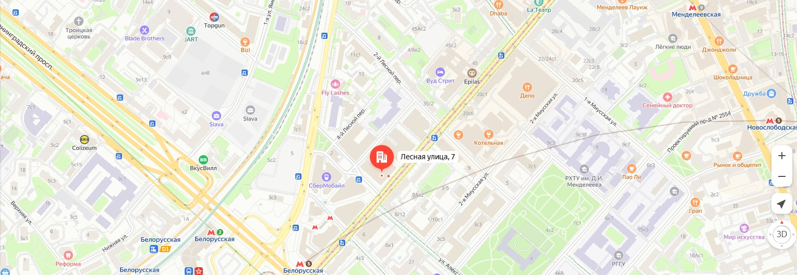

{% extends 'base.html' %}
{% block title %}
ДЗ к уроку VD05 Контакты
{% endblock %}
{% block content %}
Контакты
Наш офис расположен в удобном месте по следующему адресу:
г. Москва, ул. Ленина, д. 1

Здесь вы можете найти всю необходимую информацию для связи с нами. Мы рады ответить на ваши вопросы о курсах обучения, расписании занятий и условиях записи.
это форма образовательного процесса, при которой студенты посещают учебные заведения, такие как школы, колледжи или университеты, для получения знаний и навыков в традиционном классе. Преподавание осуществляется непосредственно преподавателем, что позволяет обеспечить интерактивное взаимодействие, участие в дискуссиях и выполнение практических заданий.
это форма обучения, при которой студенты получают образование удалённо, используя учебные материалы, предоставленные учебным заведением. Занятия проводятся в удобное для студентов время, что позволяет совмещать учёбу с работой или другими обязанностями. Обычно заочное обучение включает периодические сессии, на которых студенты могут встретиться с преподавателями и сдать экзамены.
это современная форма образования, которая осуществляется через интернет. Студенты могут учиться в любое время и в любом месте, получая доступ к видеолекциям, учебным материалам и интерактивным заданиям. Онлайн обучение предоставляет гибкость и разнообразие методов обучения, включая вебинары, форумы и виртуальные классы, что делает его доступным для широкого круга обучающихся.